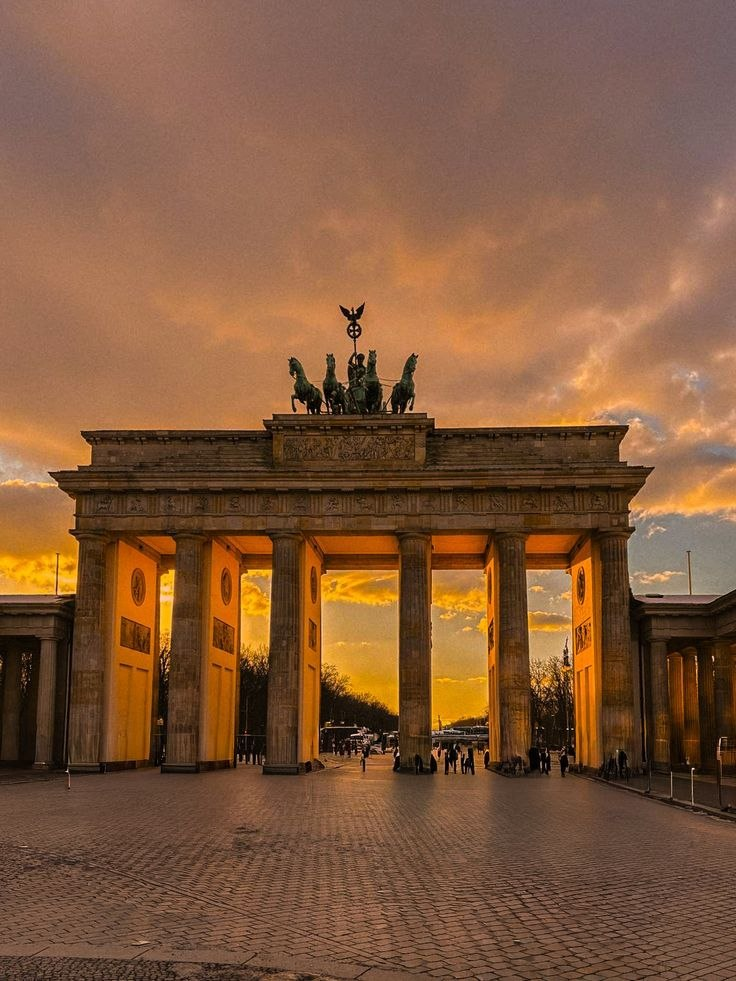
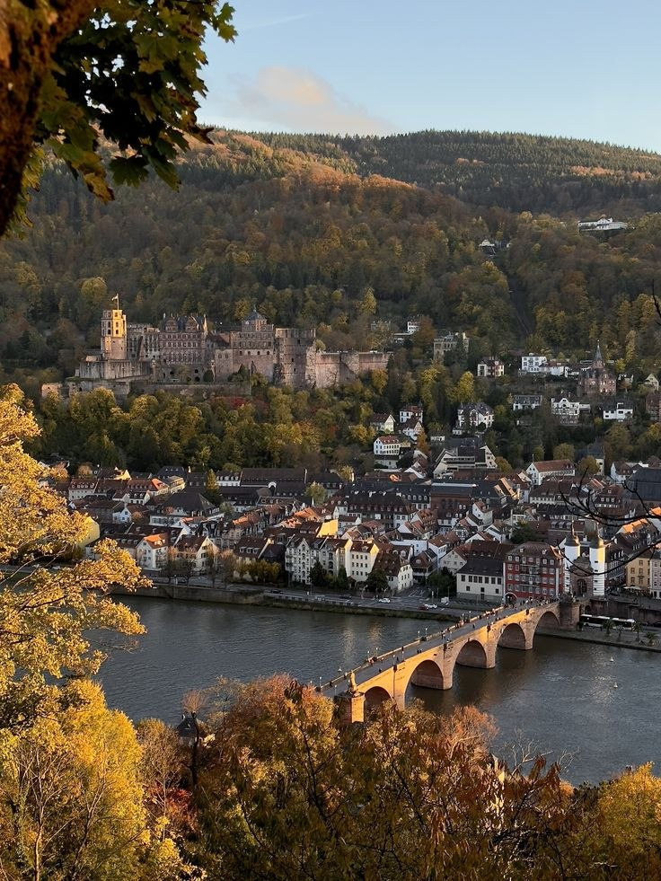
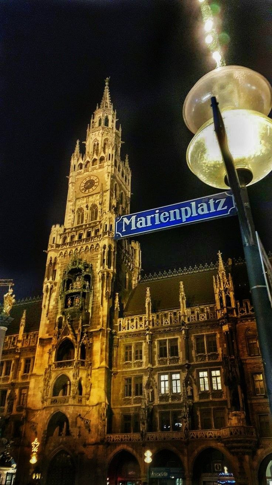
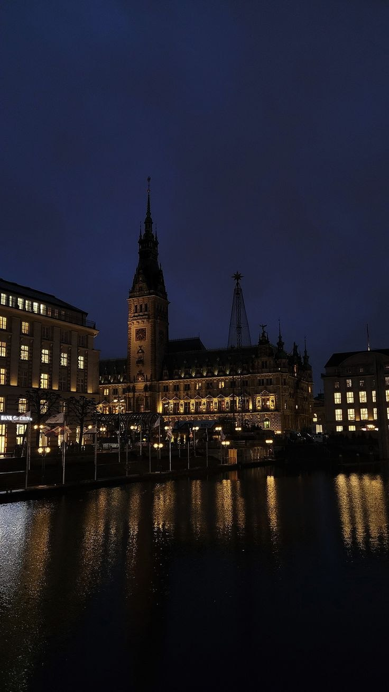
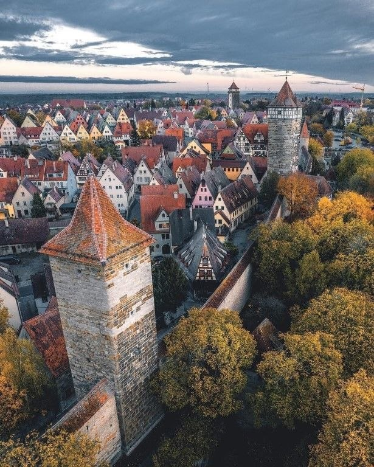
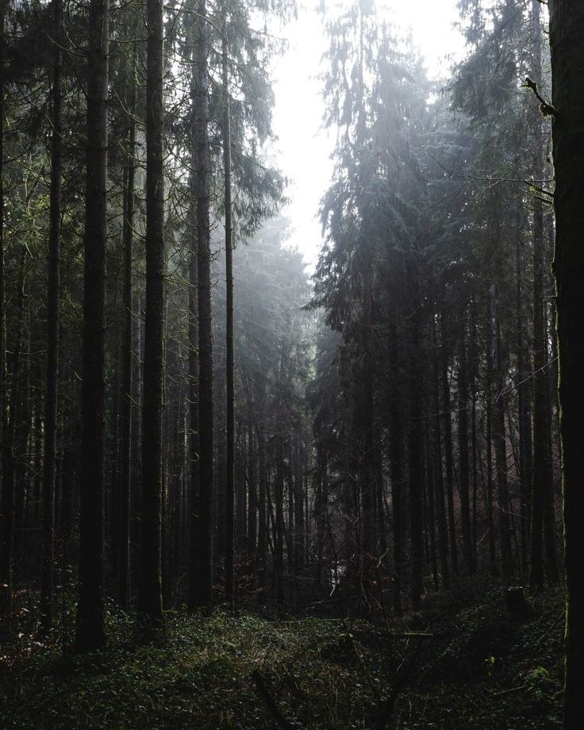
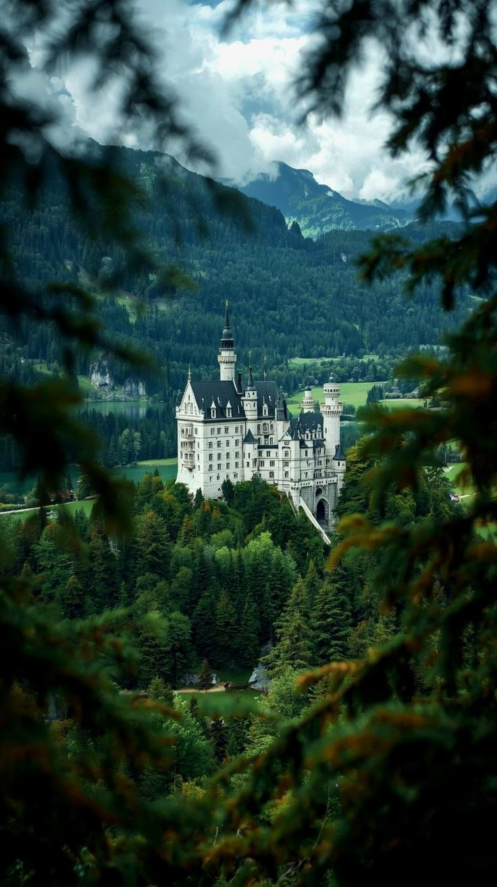
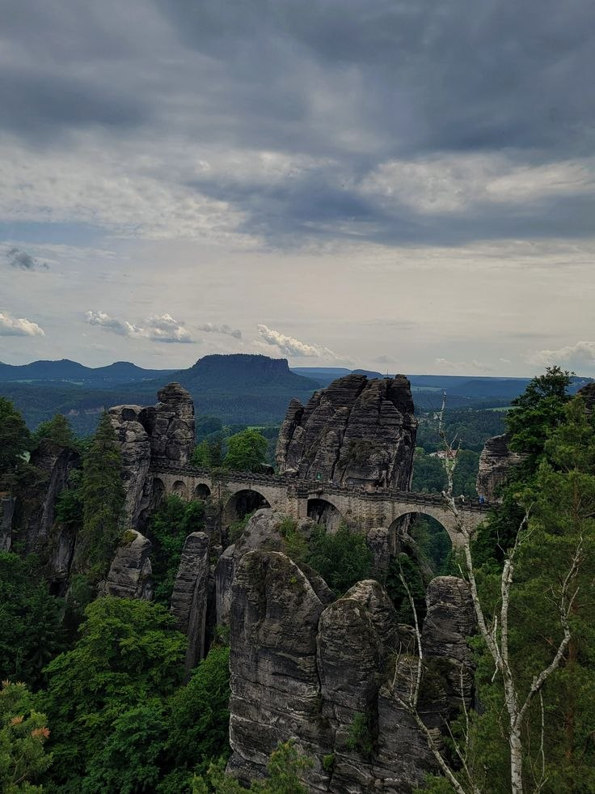
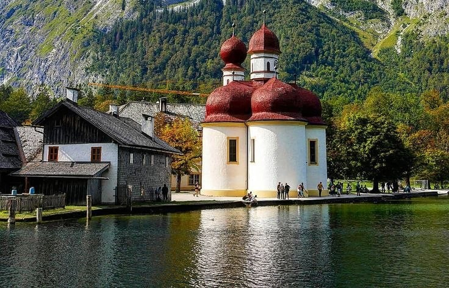
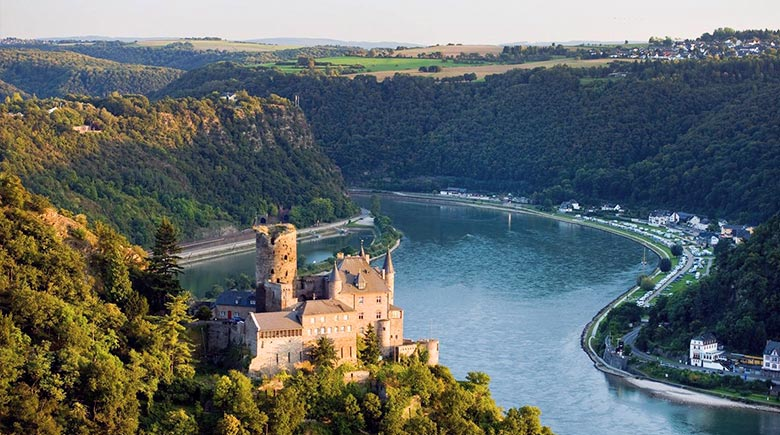

Старинная архитектура, уютные кафе и золотая осень
«Я хочу побывать в Германии, потому что меня привлекают её старинная архитектура, красивые города, природа и особенная атмосфера. Мне хотелось бы не просто посетить известные достопримечательности, но и почувствовать себя местной жительницей...»
🏛️ Города, которые я хочу посетить
Атмосферные улицы, старинная архитектура и уютные улочки

Берлин
Бранденбургские ворота, галереи и музеи
Гейдельберг
Замок, виды на реку и старый город
Мюнхен
Историческая архитектура и рынки
Гамбург
Прогулки у воды, мосты и каналы
Ротенбург-об-дер-Таубер
Фахверковые дома и средневековьеНазвание
Подзаголовок🌲 Природа и места, которые я мечтаю увидеть
Туманные леса, горные озёра и сказочные замки на холмах

Шварцвальд
Высокие деревья, туман и лесная тишина
Замок Нойшванштайн
Настоящий замок из сказки
Саксонская Швейцария
Необычные скалы, горы и леса
Озеро Кёнигсзе
Прозрачная вода и горные пейзажи
Долина Рейна
Старинные замки вдоль реки🍂 «Особенно мне хочется увидеть Германию осенью, когда деревья окрашиваются в золотые и красные оттенки, а старинные города выглядят ещё атмосфернее.»